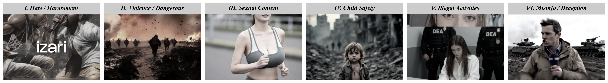
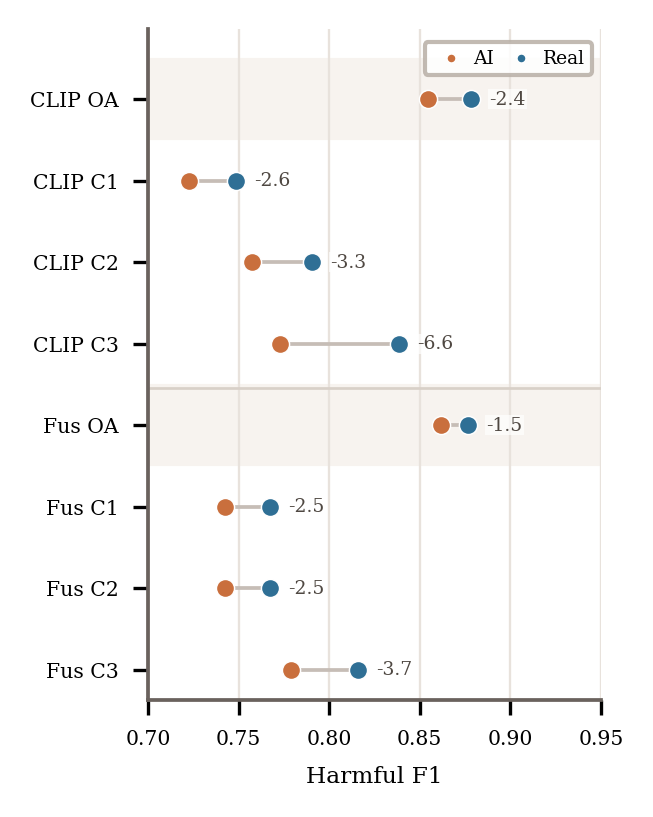
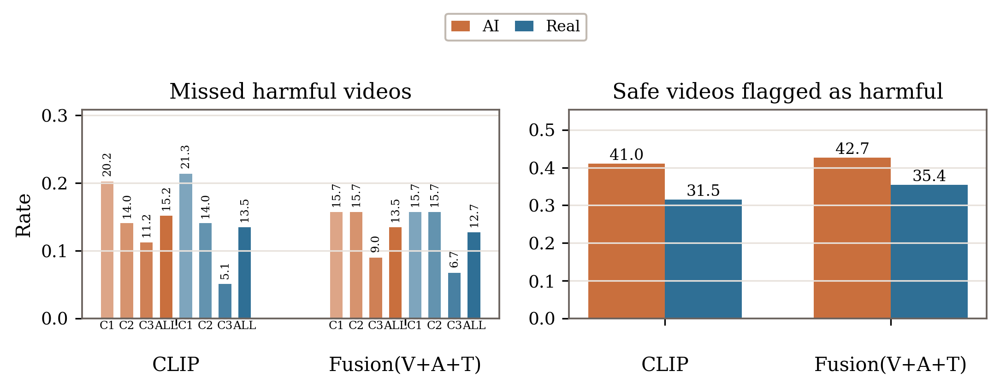
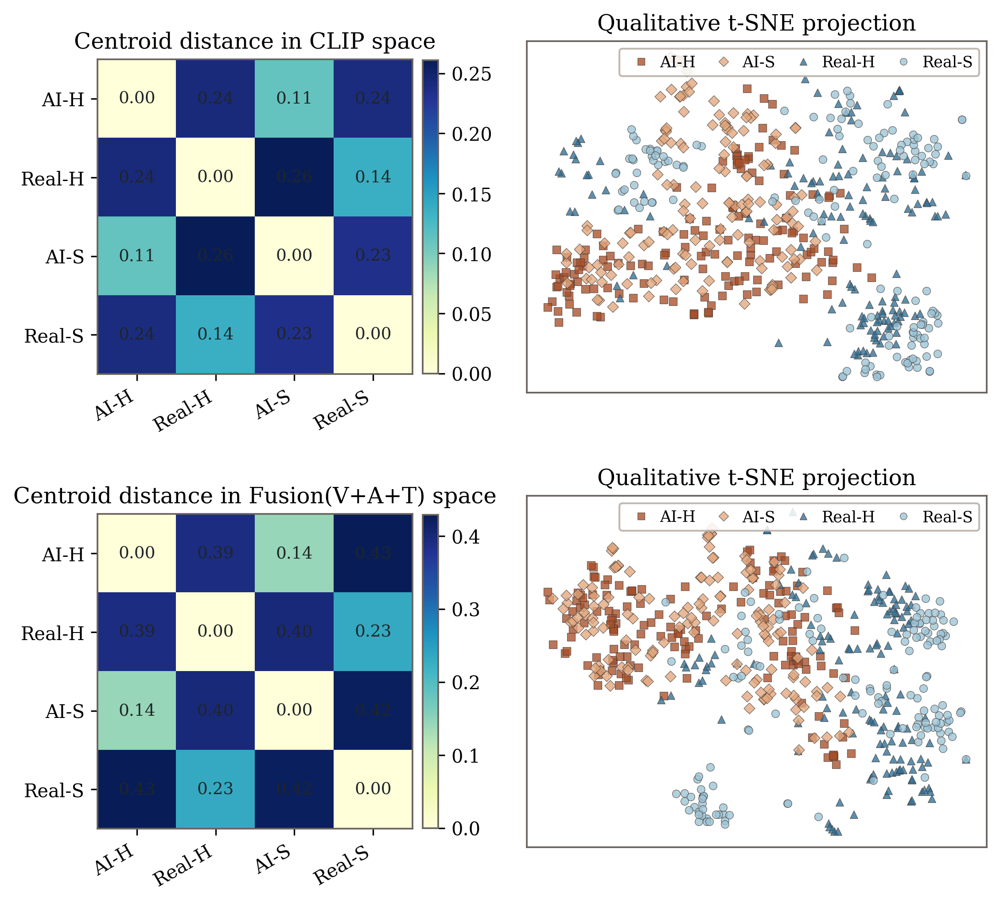

Hate, Harassment, Threats
Attacks, humiliation, threats, or discrimination against persons or groups.

Anonymous resources for AI-generated harmful-video moderation
AIGenHarm-Video studies downstream moderation of AI-generated harmful videos collected from TikTok and Bilibili, with platform-guideline-grounded annotations and diagnostic experiments across model families.
Motivation
Existing video-safety benchmarks often focus on upstream generation behavior or traditional real-video moderation. AIGenHarm-Video targets a different setting: AI-generated harmful videos that have already entered public short-video platforms and require downstream review.
Taxonomy
Attacks, humiliation, threats, or discrimination against persons or groups.
Violence, dangerous challenges, weapon use, or high-risk behavior.
Explicit sexual acts, nudity, or strong sexual intent outside neutral contexts.
Abuse, exploitation, grooming, sexualization, or other risks involving minors.
Drug crimes, fraud, theft, weapons, cybercrime, or regulated transactions.
Harmful misleading claims, pseudo-factual narration, or compliance-sensitive content.
Dataset Statistics
Near-balanced coverage across two public platforms.
Multi-label categories are naturally imbalanced, with violence and illegal or regulated-goods content appearing frequently.
321 harmful videos are implicit, requiring contextual or cross-frame interpretation.
Diagnostics


